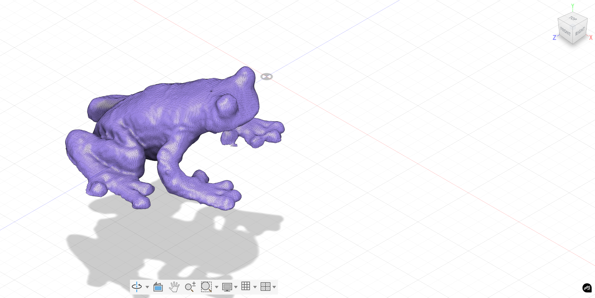

<div class="textcontainer">
<br></br>
<h3>Week 5: 3D Design & Printing</h3>
<p class = "margin"></p>
Two parts this week: model a thing in Fusion 360 and print it, and do a 3D scan of something physical. I modeled a viola (I play viola, so it felt right) and printed it on a Prusa in orange PLA, and I scanned a small rubber frog on the class's 3D scanner.
<p class = "margin"></p>
<h4>Modeling the viola</h4>
<p class = "margin"></p>
I built the whole instrument as an assembly in Fusion 360 — body, neck, fingerboard, scroll, bridge, strings, tailpiece, the chinrest, all as separate components. Most of the body came from lofting between a top and bottom outline sketch with a curvature constraint, which gave the soft swell you see on a real viola top plate. The f-holes and the purfling-style edge detail are cut into the top surface.
<p class = "margin"></p>
<p class = "margin"></p>
Source files for the model:
<p class = "margin"></p>
<a href="viola.stp" download>viola.stp</a> &nbsp;|&nbsp;
<a href="viola.3mf" download>viola.3mf</a>
<p class = "margin"></p>
<h4>Printing it (and what went wrong)</h4>
<p class = "margin"></p>
I sliced it for a Prusa FDM printer in orange PLA. To keep the print time reasonable for one class session I scaled the assembly way down — the final print fits comfortably in my palm.
<p class = "margin"></p>
<img src="viola-in-hand.jpg" alt="3D-printed viola sitting in my palm" width="400">
<p class = "margin"></p>
At that scale, a couple things broke down. The strings on the model are real geometry (thin cylinders running from tailpiece to scroll), and at print size they ended up being well under the printer's minimum feature size. So instead of clean strings you get a stringy, blobby mess across the bridge area, and the scroll lost most of its detail. The body shape held up fine — you can clearly tell it's a viola — but the fine features turned into noise.
<p class = "margin"></p>
<img src="viola-standing.jpg" alt="3D-printed viola standing up, showing detail issues" width="300">
<p class = "margin"></p>
If I printed it again, I'd either (a) bump the scale up 2–3× so the strings actually resolve, (b) delete the string and bridge geometry from the model and let the painted detail do that work, or (c) print it on an SLA/resin printer instead of FDM so the small features actually hold. Lesson learned: feature size has to match the printer's resolution, not just the build volume.
<p class = "margin"></p>
For scale, here's the print sitting in my real viola case next to the actual instrument:
<p class = "margin"></p>
<img src="viola-next-to-viola.jpg" alt="3D-printed viola next to a real wooden viola in its case" width="500">
<p class = "margin"></p>
<h4>3D scan: William Frog</h4>
<p class = "margin"></p>
For the scan exercise I scanned a small rubber frog with the class's Revopoint POP 2, a handheld structured-light 3D scanner. You hold the scanner and walk it around the object while the live preview fills in the mesh. The output came in as a dense triangulated mesh that I loaded into Fusion 360 to inspect:
<p class = "margin"></p>
<p></p>
<p class = "margin"></p>
The scan captured surprising amounts of surface detail — you can see the bumps along the back, the pupils, the toes. I didn't end up printing this one (the viola print was the main deliverable), so the frog lives as an STL.
<p class = "margin"></p>
<a href="william-frog.stl" download>william-frog.stl</a>
<p class = "margin"></p>
</div>